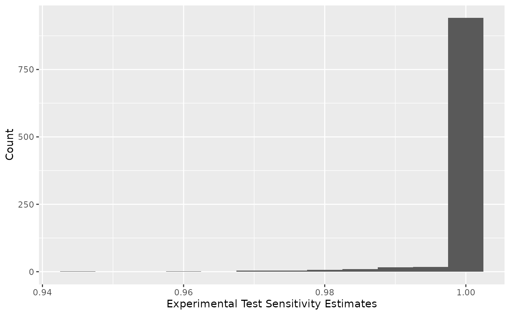
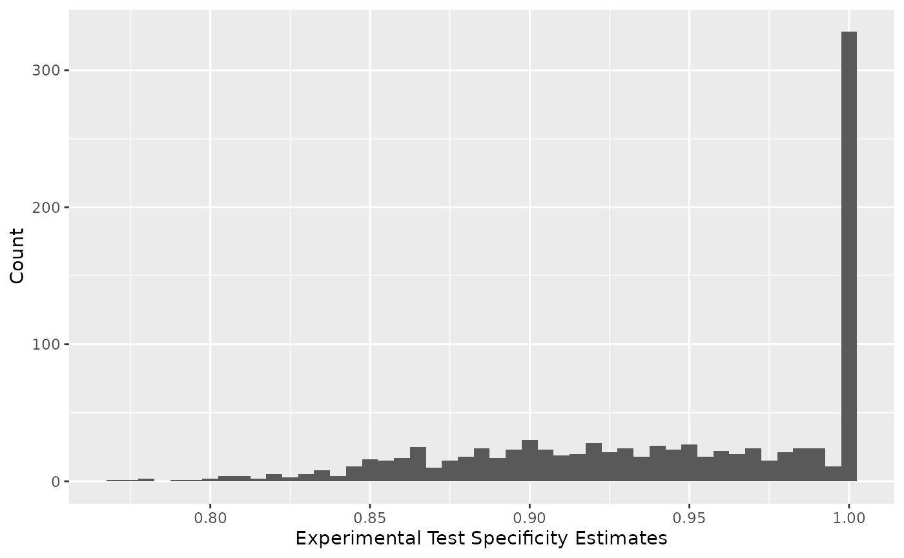
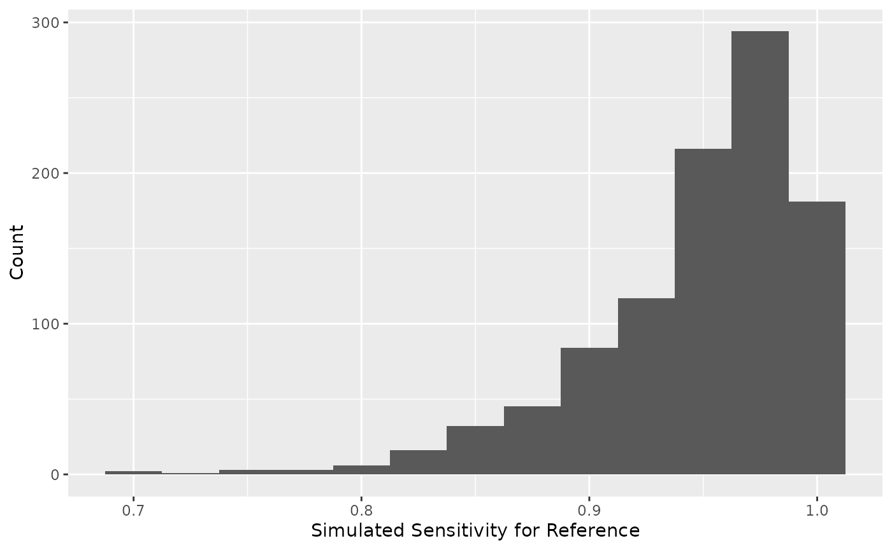
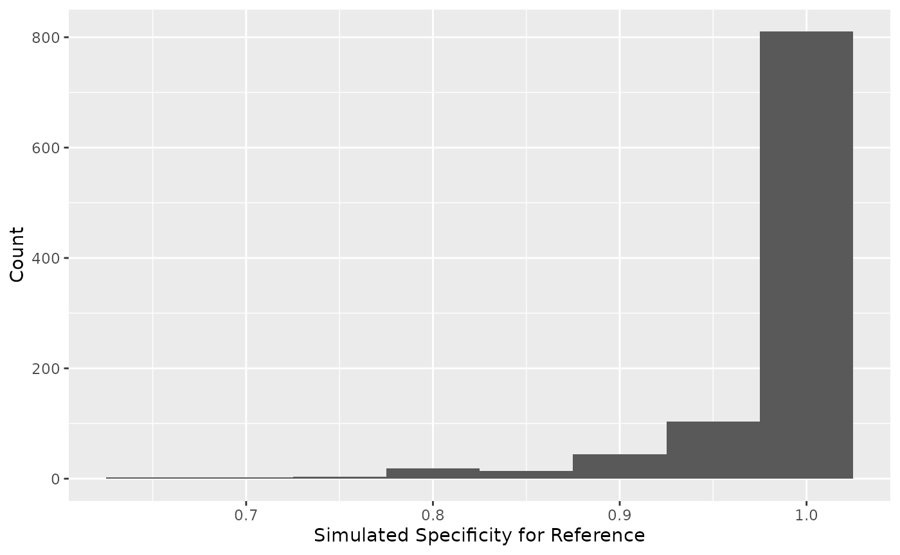

Getting Started
Getting Started
Center for Veterinary Biologics - Statistics Section
August 2019
DiagTestKit-Getting_Started.rmdIntroduction
The DiagTestKit package provides functions to obtain
point and interval estimates for diagnostic sensitivity and specificity
for an experimental diagnostic test kit when one or more imperfect
reference tests are used. The package also includes a function to
estimate and obtain confidence intervals for diagnostic sensitivity or
specificity in the event an infallible reference test is used.
The technical details for how the algorithm works are provided in STATWI0002. For a 2-state experimental test with one or more fallible reference tests, the default display will show the point and interval estimates for sensitivity (\(\pi_1\)) and specificity (\(\theta_1\)). For a 3-state experimental test with one or more fallible reference tests, the default display will show the point and interval estimates for sensitivity (\(\pi_1\)), specificity (\(\theta_1\)), probability of suspect for disease positive (\(\psi_1\)) and probability of suspect for disease negative (\(\phi_1\)). The algorithm optimizes the sum of squared residuals with respect to \(\pi_1\), \(\theta_1\), \(\delta_1\), and \(\gamma_1\) where \(\delta_1\) and \(\gamma_1\) express the probability of a suspect result as a fraction of the non-correct test results. See STATWI0002 for further details.
This vignette provides step–by–step instructions for using the
package to obtain point and interval estimates for the sensitivity (Sn =
\(\pi\)) and specificity (Sp = \(\theta\)) of a 2–state experimental test
kit. The DiagTestKit package requires a functional
installation of R software. DiagTestKit package is
available via github.
Code in this vignette was run using version 0.6.11 of the
DiagTestKit package.
Data processing
The data file titled dichotomoussensspec_deviceinfo.csv will be used
to illustrate the use of the estimateSnSp function. While
this data file includes 3 sample types, only the whole blood samples
will be used to demonstrate the estimateSnSp function.
Importing the data is illustrated for completeness, but the dataset
dat_dichot is available within the DiagTestKit package. All
raw data files should follow the formats in Section 1.8 or Section 1.9
of Appendix 1 in CVB
Data Guide. A table of counts (dat_infal) available within the
“DiagTestKit” package will be used to illustrate the use of the
cloppearSnSp function. The cloppearSnSp
provides the binomial confidence interval using the Clopper-Pearson
method when an infallible reference test is used.
Load package and data
library(ggplot2)
library(DiagTestKit)
data("ExampleData")
dat <- dat_dichot
infallible <- dat_infalObtaining counts
The data input for the estimateSnSp function requires
creating a data frame that includes the count for each unique
combination of test results. The data frame should include zero counts
for possible test combinations that were not observed, but it should not
include zero counts for impossible test combinations (structural zeros).
Including non-structural zeros may be achieved using the .drop=FALSE
setting within ddply. There is more than one way to obtain
the data frame with the counts for all possible test combinations. Two
possibilities are illustrated here. First, the ddply
function in the plyr package can be used.
#Blood Samples
blood <- ddply(.data = subset(dat, specimen == "wholeblood"),
.variables = .(visual_read, ref_result),
.drop = FALSE,
.fun = summarize,
Count = length(deviceID))This will require renaming the columns in a manner that will be
recognized by estimateSnSp. Namely, the column name of
visual_read from the raw data file needs to be changed to reflect this
is the response associated with the experimental kit. The expression
“exp” should be included in the column corresponding to the experimental
test results. The expression “ref” should be included in all columns
corresponding to the reference test(s) results.
Alternatively, the data frame including the counts from all possible
testing combinations can be obtained by converting the output from the
table function in base R into a data
frame.
blood2 <- data.frame(table(Exp = dat$visual_read[dat$specimen == "wholeblood"],
Ref1 = dat$ref_result[dat$specimen == "wholeblood"]))Fallible Reference Test(s)
Use the estimateSnSp function to estimate the
sensitivity and specificity of the 2–state experimental test. The
function has 4 required inputs, the data frame of counts (dat),
reasonable values based on available information for the sensitivity of
each reference test (Sn.ref), reasonable values based on available
information for the specificity of each reference test (Sp.ref), and a
vector containing reasonable estimates of prevalence for each population
sampled. Each element in the prevalence vector should be named to
distinguish populations or sample sets (i.e. a named vector). Two
alternative methods for inputting the performance characteristics
(sensitivity and specificity) of the reference test are available (and
illustrated below) for a 2–stage reference test, a named vector or a
named data frame. For a 3–stage reference test, the probability of
suspect as a proportion of an incorrect test result (for both disease
positive and disease negative) must be supplied. Therefore, if one or
more reference tests have 3 stages, a named data frame must be used.
Use a named data frame for inputs of Sn.ref and Sp.ref
This example illustrates the use of a named data frame rather than a named vector for the input variables Sn.ref and Sp.ref. The output seen here indicates that there was no column named “population” and the dataset is being treated as if it has been sampled from a single population. The function also provides updates every 50 iterations (simulation cycles). Here nsim was not specified in the input and therefore the default of 1000 simulation cycles is being performed.
Here, the dataset blood is used as the input data (dat). Both Sn.ref and Sp.ref are named data frames containing a single column and two rows. Because the reference test only has 2 states, the second row includes a zero (as there is no suspect region). The column is named “Ref1” to indicate the inputs correspond to the first (and only, in this instance) reference test. The prev.pop is a vector with a single named element. The element name is “A” used as an arbitrary designation for the only population (or sample set) tested.
blood_SnSp <- estimateSnSp(dat = blood,
Sn.ref = data.frame(Ref1 = c(0.95, 0)),
Sp.ref = data.frame(Ref1 = c(0.98, 0)),
prev.pop = c(A = 0.70))## Warning in estimateSnSp(dat = blood, Sn.ref =
## data.frame(Ref1 = c(0.95, : The data suggests a
## single population was tested## The optimization has begun## The following is the number of iterations completed: 50## The following is the number of iterations completed: 100## The following is the number of iterations completed: 150## The following is the number of iterations completed: 200## The following is the number of iterations completed: 250## The following is the number of iterations completed: 300## The following is the number of iterations completed: 350## The following is the number of iterations completed: 400## The following is the number of iterations completed: 450## The following is the number of iterations completed: 500## The following is the number of iterations completed: 550## The following is the number of iterations completed: 600## The following is the number of iterations completed: 650## The following is the number of iterations completed: 700## The following is the number of iterations completed: 750## The following is the number of iterations completed: 800## The following is the number of iterations completed: 850## The following is the number of iterations completed: 900## The following is the number of iterations completed: 950## The following is the number of iterations completed: 1000## The optimization has begun
## The following is the number of iterations completed: 50
## The following is the number of iterations completed: 100
## The following is the number of iterations completed: 150
\(\vdots\)
## The following is the number of iterations completed: 1000
blood_SnSp## 1000 simulations
## 95 % Interval Estimates
##
## Point.Estimate Lower Upper
## Sn = P(T+|D+) 1.0000000 0.9953731 1
## Sp = P(T-|D-) 0.9548488 0.8460711 1Use a named vector for inputs of Sn.ref and Sp.ref
As this example has a single 2–state reference test, a named vector
can be used for the input variables for Sn.ref and Sp.ref (rather than a
named data frame). If one or more of the reference tests are 3–state
tests (includes a suspect region), using a named vector is not an
option. Using named vectors for Sn.ref and Sp.ref is illustrated with
the data frame obtained by converting the output from the
table function (blood2). This example shows the additional
code to reduce the frequency of messages regarding the number of
iterations completed.
blood2_SnSp <- estimateSnSp(dat = blood2,
Sn.ref = c(Ref1 = 0.95),
Sp.ref = c(Ref1 = 0.98),
prev.pop = c(A = 0.70),
control = estimateSnSpControl(iter.n = 250))## Warning in estimateSnSp(dat = blood2, Sn.ref =
## c(Ref1 = 0.95), Sp.ref = c(Ref1 = 0.98), : The
## data suggests a single population was tested## The optimization has begun## The following is the number of iterations completed: 250## The following is the number of iterations completed: 500## The following is the number of iterations completed: 750## The following is the number of iterations completed: 1000
blood2_SnSp## 1000 simulations
## 95 % Interval Estimates
##
## Point.Estimate Lower Upper
## Sn = P(T+|D+) 1.0000000 0.9936207 1
## Sp = P(T-|D-) 0.9568654 0.8400854 1Controlling Output
Seeds
The output from the 2 examples (shown above) is not exactly the same because the seed for the random number generation was not set in these examples, but the seed used can be viewed using the following code.
blood_SnSp$input$seed## [1] 8075
blood2_SnSp$input$seed## [1] 59291The output can be forced to be the same by controlling the seed. This
will be illustrated by using the second dataset and the seed used for
the first call to estimateSnSp. The message regarding the
number of iterations has been suppressed in this example.
blood2_a_SnSp <-
estimateSnSp(dat = blood2,
Sn.ref = c(Ref1 = 0.95),
Sp.ref = c(Ref1 = 0.98),
prev.pop = c(A = 0.70),
control = estimateSnSpControl(seed = blood_SnSp$input$seed,
rep.iter = FALSE))## Warning in estimateSnSp(dat = blood2, Sn.ref =
## c(Ref1 = 0.95), Sp.ref = c(Ref1 = 0.98), : The
## data suggests a single population was tested## The optimization has begun
blood2_a_SnSp## 1000 simulations
## 95 % Interval Estimates
##
## Point.Estimate Lower Upper
## Sn = P(T+|D+) 1.0000000 0.9953731 1
## Sp = P(T-|D-) 0.9548488 0.8460711 1Evaluating Output
Convergence
Prior to reporting the point and interval estimates, verify the optimization convergence in each instance. A numeric value of 0 indicates the optimization converged. Here, we see that all have converged and we can check the convergence message as well.
unique(blood_SnSp$detailOut$Converge)## [1] 0
unique(blood_SnSp$detailOut$Message)## [1] "CONVERGENCE: NORM OF PROJECTED GRADIENT <= PGTOL"Distributions of Optimized Values
All optimized values for sensitivity of the experimental kit can be viewed using a histogram.

All optimized values for specificity of the experimental kit can be viewed using a histogram.

Simulated Values for Reference Test
Similarly, the simulated values of sensitivity for the reference test
can be extracted using blood_SnSp$input$Sn.sims. The
simulated distribution for the sensitivity of the reference test is
displayed as a histogram.

The simulated values of specificity for the reference test can be
extracted using blood_SnSp$input$Sp.sims. The simulated
distribution for the specificity of the reference is displayed as a
histogram.

#Infallible Reference Test
Use the cloppearSnSp function to estimate the
sensitivity and specificity of a 2–state experimental test when an
infallible reference test has been used to determine the true disease
status of each sample. The function has one required input, the data
frame of counts (dat).
Estimating Sensitivity
By default the function will estimate sensitivity.
infal_Sn <- cloppearSnSp(dat = infallible)
infal_Sn## [1] "Sn = P(T+|D+): 0.987013 (95% CI: 0.953876, 0.998423)"The total number of positive samples tested can be extracted using
infal_Sn$data$Total.Positive and the number of positive
samples that tested positive by the experimental test can be obtained
using infal_Sn$data$Test.Positive. The sensitivity estimate
can be obtained by infal_Sn$calcVal$Sn and the lower and
upper confidence limits can be obtained using
infal_Sn$calcVal$Sn.LL and
infal_Sn$calcVal$Sn.UL, respectively.
Estimating Specificity
The function will estimate specificity when
est.Sn = FALSE.
infal_Sp <- cloppearSnSp(dat = infallible,
est.Sn = FALSE)
infal_Sp## [1] "Sp = P(T-|D-): 0.970297 (95% CI: 0.915643, 0.993832)"Similarly, the total number of negative samples tested can be
extracted using infal_Sp$data$Total.Negative and the number
of negative samples that tested negative by the experimental test can be
obtained using infal_Sp$data$Test.Negative. The specificity
estimate can be obtained by infal_Sp$calcVal$Sp and the
lower and upper confidence limits can be obtained using
infal_Sp$calcVal$Sp.LL and
infal_Sp$calcVal$Sp.UL, respectively.